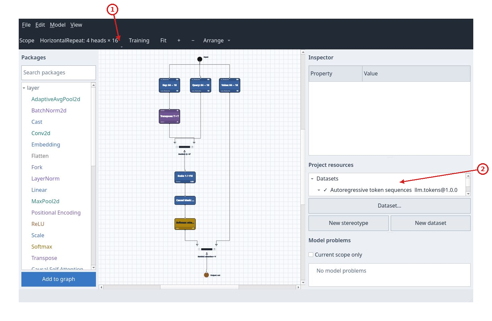
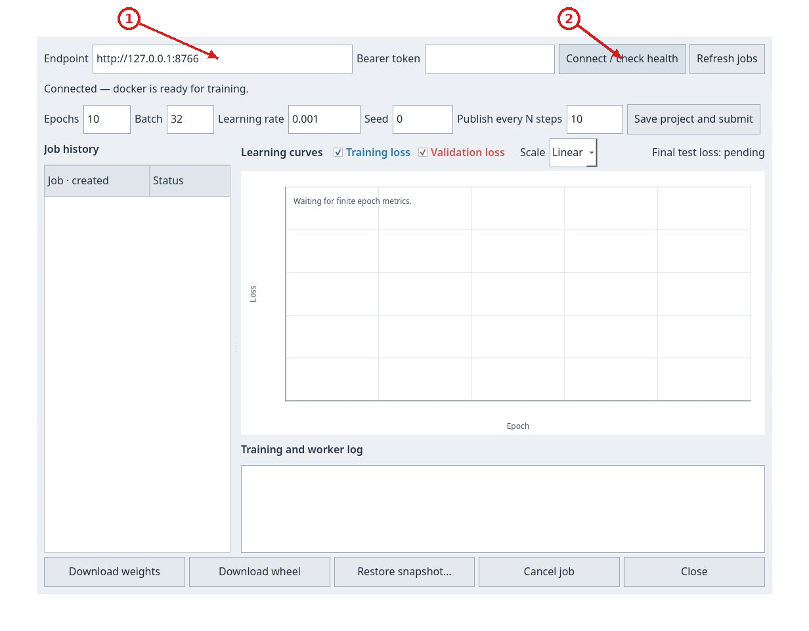
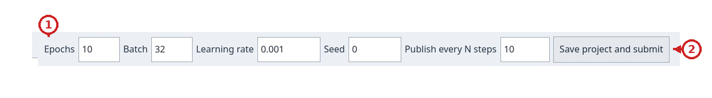
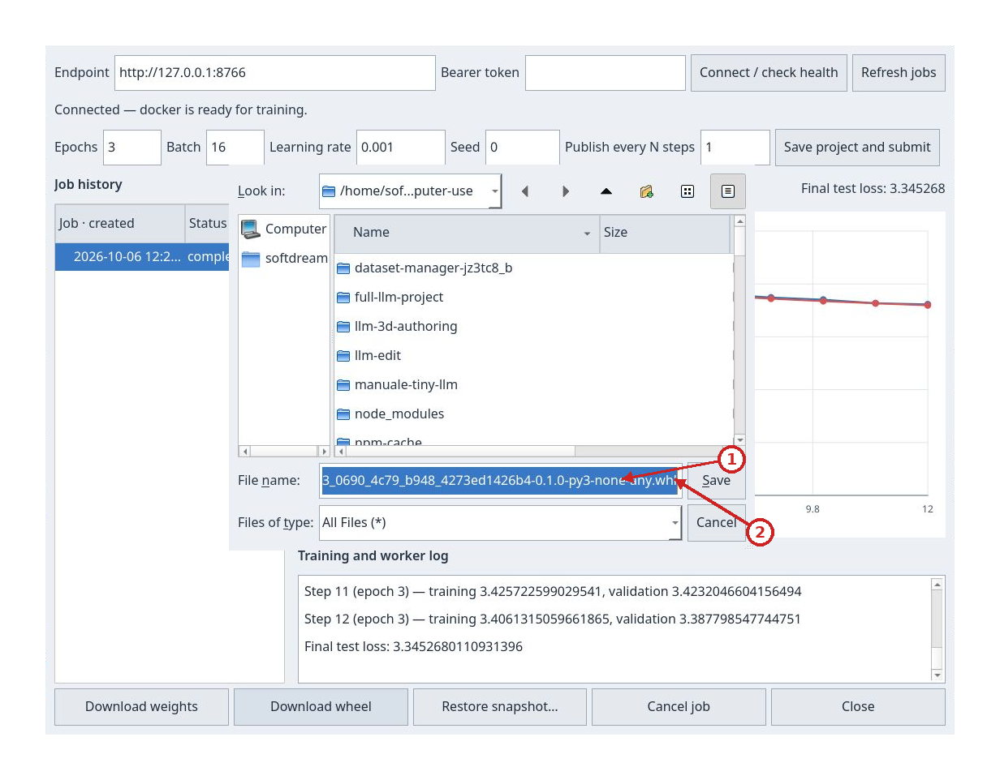

Tutorial: train a tiny LLM
This walkthrough starts from the model shipped in examples/models/tiny-decoder-llm, available in the client as mini LLM. Create a copy, check the dataset and graph, run a short training job and download a model that Python can use. The first experiment teaches the complete workflow; a full-corpus path is included at the end.
1. Prepare the client and backend
From the repository root, with compilers, CMake, Qt 6, just, uv and a Docker-compatible runtime available:
just build
just backend-sync
just backend-image
just backend-run
If the backend was already installed and running before this update, rebuild
the image with just backend-image, stop the service with Ctrl-C, and start it
again with just backend-run before submitting the job.
Leave the server terminal open. In a second terminal, start the client:
./build/qt/nnmodelling-ui
The default backend listens at http://127.0.0.1:8765. The screenshots in this tutorial show 8766, chosen to isolate the walkthrough from a port that was already occupied. To reproduce that address, start the server with:
NNMODELLING_BACKEND_PORT=8766 just backend-run
Use the port of the server you started in the client. If you chose a token, enter it in the Training panel as described in the backend configuration.
2. Create a model copy
In the initial chooser, select New mini LLM, or use File > New from template > mini LLM…. Choose a parent folder, enter the ID llm, and confirm the display name. The program creates and opens the new subfolder; an existing destination is rejected.

Click the image to inspect it at its original size.
- Available templates
The original project remains available for other experiments. To make a manual copy instead, copy all of examples/models/tiny-decoder-llm to a working folder and open that folder, not only its model.json file, with Open project.
3. Read the graph before submitting
The model uses a 65-character vocabulary, context length 128, width 64, two decoder blocks, four attention heads of width 16, and a feed-forward layer of width 256. The root Input receives tokens; Embedding and Positional Encoding prepare the representations; Repeat applies the decoder blocks; LayerNorm and Linear produce logits; Token Cross Entropy feeds Loss Output. Output collects the prediction.

Click the image to inspect it at its original size.
- Menu bar
- Scope, training and canvas tools
- Package catalog
- Graph canvas
- Inspector
- Project resources
- Model problems
- Status area
Check Project resources: llm.tokens@1.0.0 must be active. Dataset… > Edit lets you inspect the slots without changing them:
| Slot | Dtype | Shape | Meaning |
|---|---|---|---|
Input tokens |
int64 |
[B, 128] |
Sequences of character indices. |
Target target |
int64 |
[B, 128] |
The same sequence shifted by one character: the next symbol to predict. |
Choose Cancel if you are only inspecting. The included dataset contains 64 training, 16 validation and 16 test windows, taken from a Tiny Shakespeare excerpt. It is ready to use; the first training run does not need a corpus download.
Select Repeat: the Inspector shows times = 2 and output float32[B, 128, 64]. Open Scope and choose the decoder block; in its scope select HorizontalRepeat: times = 4, join = Concat, dim = -1. Enter the attention-head scope to see Q × Kᵀ, scale 0.25 = 1/√16, causal mask, Softmax and multiplication by V. The join concatenates four width-16 results into a width-64 tensor.

Click the image to inspect it at its original size.
- Current scope
- Dataset used by the project
Return to Root in the Scope tree. The logits output should have shape float32[B, 128, 65], while loss is scalar. No model problems means shape analysis is complete. Correct shapes and available Python resources are both required: the client shows the first, and the backend checks the second while running the project.
4. Connect and choose a short experiment
Press Training. Set the right endpoint, leave Bearer token blank if the server does not require one, and press Connect / check health. The status line should say that the runtime is ready for training.

Click the image to inspect it at its original size.
- Backend address
- Connect and check service health
To reproduce the illustrated run, use:
| Field | Value | Reason |
|---|---|---|
Epochs |
3 |
Three passes over the small dataset. |
Batch |
16 |
Four updates per epoch for 64 training windows. |
Learning rate |
0.001 |
Adam optimizer step size. Use a decimal point. |
Seed |
0 |
Fixes initialization and the job's random sources. |
Publish every N steps |
1 |
Publishes and validates at every update, useful for seeing curves quickly in this small run. |

Click the image to inspect it at its original size.
- Epochs, batch size, learning rate and seed
- Save the project and submit the job
Press Save project and submit once. The client saves edits before submission, collects resources and data, and creates the job. Wait for it to appear in Job history, then select it; this loads curves, status and metrics. If an old submission message remains visible, Connect / check health refreshes the connection line; the job row status and metrics describe the experiment.
5. Read the curves and identify completion
The blue series is training loss and the red series is validation loss. A lower value means a smaller mean error for this objective. Training measures the data used to update the model; validation measures separate data without updating the weights. If training keeps improving while validation gets worse, the model may be overfitting the training data.

Click the image to inspect it at its original size.
- Backend connection
- Training configuration
- Job history and status
- Training and validation loss curves
- Curve visibility and scale
- Final test loss
- Training and worker log
- Download, restore, cancel and close actions
Optimizer step counts global updates. This experiment has 12: four in each of the three epochs. Checkboxes hide or show the series; Scale > Log changes how loss is displayed and does not modify the job. Test loss is calculated at the end on a third, separate set.
The image and metrics above document historical job 86caba53-0690-4c79-b948-4273ed1426b4: it reached completed, with final-epoch mean training loss 3.462321, validation loss 3.387799 and test loss 3.345268. The download screenshot also shows the old wheel filename. These are neither results nor an artifact from a new run using project ID llm; dependency versions, runtime and machine can affect the values. The small excerpt and three epochs demonstrate the workflow, but are not enough to promise high-quality text.
If the job is failed, read Error in the panel and the server's worker.log. To stop a queued or running job, select it and press Cancel job. Closing the panel with Close leaves the job with the server. Client edits made after submission do not change the snapshot already being trained.
6. Download and use the model
With the completed job selected, press Download weights to get weights.safetensors and Download wheel for the Python package. For the new job created above with project ID llm, the expected filename is nnm_llm-0.1.0-py3-none-any.whl; nnm_llm.whl is invalid because it lacks the version and tag. The nnm_llm distribution name comes from the project ID: runs of characters outside ASCII letters and digits become _, edge underscores are trimmed, and the result is lowercased. Keep the full proposed wheel filename. A previously stored historical job may still download its old filename; do not rename or alter existing wheels.

Click the image to inspect it at its original size.
- Wheel filename and destination
- Save the downloaded wheel
In a new folder, create an isolated environment and install the downloaded wheel. Replace the path with the actual location; pip also installs declared dependencies, which must be available from a network connection or local cache:
python3 -m venv .venv
.venv/bin/python -m pip install /path/nnm_llm-0.1.0-py3-none-any.whl
The distribution name (nnm_llm) differs from the Python module, which remains job-specific and has the form nnmodel_<normalized-job-id>. Before creating infer.py, read the module name from your downloaded wheel with this command, without importing code:
python3 - /path/nnm_llm-0.1.0-py3-none-any.whl <<'PY'
import sys
import zipfile
with zipfile.ZipFile(sys.argv[1]) as wheel:
for name in wheel.namelist():
if name.startswith("nnmodel_") and name.count("/") == 1 and name.endswith("/__init__.py"):
print("Module to import:", name.split("/")[0])
PY
The following snippet shows only the import for the historical job in the screenshots and metrics above:
import torch
from nnmodel_job_86caba53_0690_4c79_b948_4273ed1426b4 import Model
torch.set_num_threads(2)
model = Model() # Loads the weights included in the wheel.
text = "ROMEO:\n"
for _ in range(40):
prediction = model.inference(text[-128:])
if not prediction:
raise RuntimeError("The model returned an empty prediction")
text += prediction[-1]
print(text)
Save the code as infer.py, replacing the historical import with the module found in your job’s wheel; do not infer it from the distribution name.
Run .venv/bin/python infer.py. Text passed to the adapter must contain characters from the vocabulary and a nonempty context of at most 128 characters. infer is an alias for inference. The function returns one prediction per sequence position; the loop uses the final predicted character to build a greedy continuation. To use compatible alternative weights, construct Model(weights_path="/path/weights.safetensors").
The wheel contains the private runtime needed to use the model: the original repository, training dataset and server are not required. Different jobs from the same project, or from projects whose IDs normalize to the same name, share a distribution name and version: install their wheels in separate environments. Artifacts remain separate by job. examples/implementation/llm is a consumer configured for a specific historical 20-epoch job; do not change its existing wheel.
7. Move to the full corpus
Once the short run works, prepare another folder for the full corpus. From the repository root:
uv run --group examples python tools/prepare_full_llm.py \
--output-project .computer-use/manuale-full-llm
The destination must not exist. The command verifies the Tiny Shakespeare corpus and its checksum, copies the model, and prepares contiguous 80/10/10 splits before extracting windows: 6,971 training, 871 validation and 871 test windows. Each window uses 128 input characters and the following character as target. If the source is not cached already, preparation needs network access; the training container remains offline.
Open .computer-use/manuale-full-llm with File > Open project…. In the Training panel, enter the values from training.json manually:
| Field | Full-corpus value |
|---|---|
Epochs |
20 |
Batch |
64 |
Learning rate |
0.001 |
Seed |
0 |
Publish every N steps |
100 |
The panel does not load training.json automatically. This setup has 109 steps per epoch and 2,180 in total; final partial epoch batches are also published when they do not fall on a multiple of 100. It takes longer than the short tutorial. Submit, select the new job and download its artifacts when it reaches completed.
8. Find the experiment and shut down
History belongs to the backend's job directory. Restarting the same service with the same NNMODELLING_JOB_ROOT restores its experiments. Restore snapshot… asks for a parent folder and a new directory name, recreates the project used for that job and opens it. This restores the project; it does not continue training. A new submission initializes a new job. The panel does not offer resume or fine-tuning from downloaded weights.
Save the project with File > Save, close the client, and stop the backend with Ctrl-C in its terminal after jobs finish. Keep the wheel and weights with your experiment results.